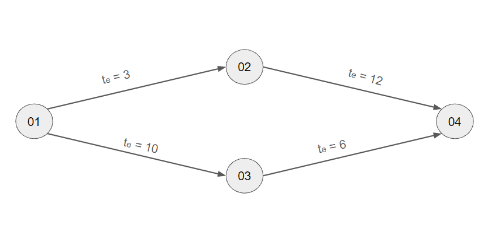

O passo seguinte na elaboração de uma rede PERT é o estabelecimento das estimativas de tempo nos quais você espera alcançar os eventos de sua rede. Estes tempos são representados pelo símbolo TE e aparecem acima das linhas de atividades na rede PERT.
O TE de um evento representa o tempo mais próximo possível em que o evento se poderá verificar. O TE é calculado somando-se os te‘s das diversas atividades referentes ao evento em questão.
Dê uma olhada na seguinte rede:

1) A estimativa do tempo que você espera para atingir o Evento 1 é zero-tempo.
Nenhuma atividade precede o evento e, portanto, não haverá consumo de tempo para atingi-lo. O TE para o Evento 1 é zero. Pois este evento é o que vai fazer as águas rolarem (evento inicial do projeto).
2) A Atividade que liga o Evento 1 ao Evento 2 tem um te de 10 semanas. Portanto, o tempo necessário para se atingir o Evento 2 é de 10 semanas depois do começo do
projeto. O Evento 2 tem um TE de 10 semanas.
3) A atividade que liga o Evento 1 ao Evento 3 tem um te de 3 semanas. Portanto, o tempo necessário para se atingir o Evento 3 é de 3 semanas depois do começo do
projeto. O Evento 3 tem um TE de 3 semanas.
4) De acordo com a nossa rede, todas as atividades devem ser consideradas antes que o Evento 4 seja atingido. Desde que existem dois caminhos, que consomem tempo, que nos levam ao Evento 4, o (mais longo, mais curto) representa o menor tempo possível para verificar-se o Evento 4.
Vire para a página 74.